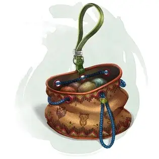

Сумка фокусов
Bag of Tricks
Чудесный предмет, необычный

Рекомендованная стоимость 101-500 зм
Эта обычная с виду сумка, изготовленная из серой, рыжей или коричневой ткани, выглядит пустой. Однако если засунуть в неё руку, можно нащупать маленький пушистый предмет. Весит сумка половину фунта.
Вы можете действием вынуть из сумки пушистый предмет и бросить его на 20 футов. Когда предмет приземляется, он превращается в существо, которое вы выбираете броском к8, консультируясь с приведённой таблицей, соответствующей цвету сумки. Характеристики существ смотрите в Бестиарии. Существо исчезает на следующем рассвете или когда его хиты будут уменьшены до 0.
Существо дружественно к вам и вашим спутникам, и действует в ваш ход. Вы можете бонусным действием отдать команду, как существу перемещаться, и какое действие ему совершать в следующем ходу, или можете отдать общий приказ, такой как «атакуй врагов». Если приказов нет, существо действует сообразно своей природе.
Как только из сумки достанут три пушистых предмета, её нельзя будет использовать до следующего рассвета.
Серая сумка фокусов.
| к8 | Существо |
| 1 | Куница [weasel] |
| 2 | Гигантская крыса [giant rat] |
| 3 | Барсук [badger] |
| 4 | Кабан [boar] |
| 5 | Пантера [panther] |
| 6 | Гигантский барсук [giant badger] |
| 7 | Лютый волк [dire wolf] |
| 8 | Гигантский лось [giant elk] |
Рыжая сумка фокусов.
| к8 | Существо |
| 1 | Крыса [rat] |
| 2 | Сова [owl] |
| 3 | Мастиф [mastiff] |
| 4 | Козёл [goat] |
| 5 | Гигантский козёл [giant goat] |
| 6 | Гигантский кабан [giant boar] |
| 7 | Лев [lion] |
| 8 | Бурый медведь [brown bear] |
Коричневая сумка фокусов.